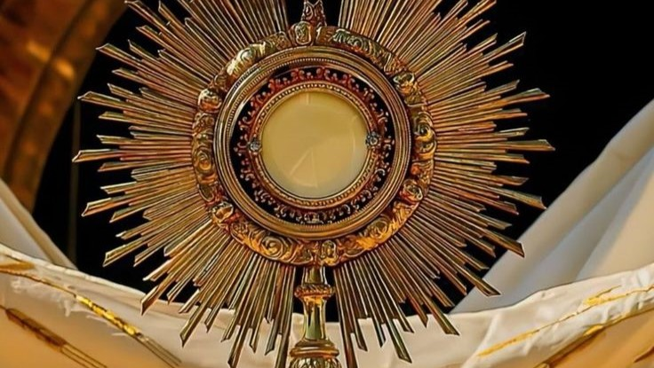

os Ritos Iniciais e Finais englobam o início e o encerramento da celebração. Os ritos iniciais incluem a saudação, o ato penitencial e a oração da coleta, preparando a comunidade. Os ritos finais consistem na bênção e no envio dos fiéis para viverem o Evangelho.
Saiba MaisÉ o momento de escuta e reflexão sobre a Palavra de Deus. Inicia-se com leituras bíblicas. Após as leituras, o sacerdote faz a homilia, explicando as passagens e aplicando-as à vida dos fiéis. Em seguida, a comunidade professa sua fé com o "Creio" e são feitas as preces da comunidade.
Saiba MaisÉ o centro da missa e celebra o sacrifício de Cristo. Começa com a apresentação das oferendas, seguidos pela oração eucarística, onde o sacerdote invoca o Espírito Santo e realiza a consagração, transformando o pão e o vinho no Corpo e Sangue de Cristo. Após, a comunidade reza o "Pai Nosso" e os fiéis recebem o Corpo de Cristo. Esse rito é concluído com uma ação de graças.
Saiba Mais